| Tema | Slides do Moodle | Caderno de Atividades e Essia |
|---|---|---|
| 1. Sistema reprodutor | Reprodutor feminino · Reprodutor masculino | Caps. 2 a 5 (pp. 10 a 18) · Essia, cap. 13, seções 13.3 a 13.7 (sem ISTs) |
| 2. Sistema nervoso | Introdução · Neurônio e impulso · Sinapses · Arco reflexo · SNP somático e autônomo | Cap. 6 (pp. 19 a 21) · Essia, cap. 12 (exceto 12.2) |
| 3. Semana Interdisciplinar | Estudos dirigidos da semana | Ações humanas nos ecossistemas aquáticos e efeitos no corpo humano |
| 4. Revisão | Maratona de Biologia (Moodle) | Digestório · Circulatório · Respiratório · Excretor · Endócrino |
Sistema reprodutor masculino
Testículos, vias espermáticas, glândulas e controle por FSH e LH
| Estrutura | Função |
|---|---|
| Testículos (2, na bolsa escrotal) | Nos túbulos seminíferos são produzidos os espermatozoides (espermatogênese). As células entre os túbulos produzem testosterona. A bolsa escrotal mantém os testículos fora do abdome, a uma temperatura um pouco menor, boa para a produção dos gametas. |
| Epidídimo | Tubo enovelado sobre o testículo onde os espermatozoides são armazenados e terminam de amadurecer. |
| Canais (ductos) deferentes | Levam os espermatozoides do epidídimo até a uretra. São cortados na vasectomia. |
| Vesículas seminais | Produzem o líquido seminal (cerca de 80% do sêmen), que fornece energia (frutose) aos espermatozoides. |
| Próstata | Produz o líquido prostático (cerca de 20% do sêmen), alcalino: neutraliza a acidez da vagina e ativa os espermatozoides. |
| Uretra | Canal comum aos sistemas excretor e reprodutor: leva a urina (da bexiga) e o sêmen (dos deferentes) para fora. |
| Pênis | Órgão da cópula e da excreção. Os corpos cavernosos e esponjoso se enchem de sangue na ereção. |
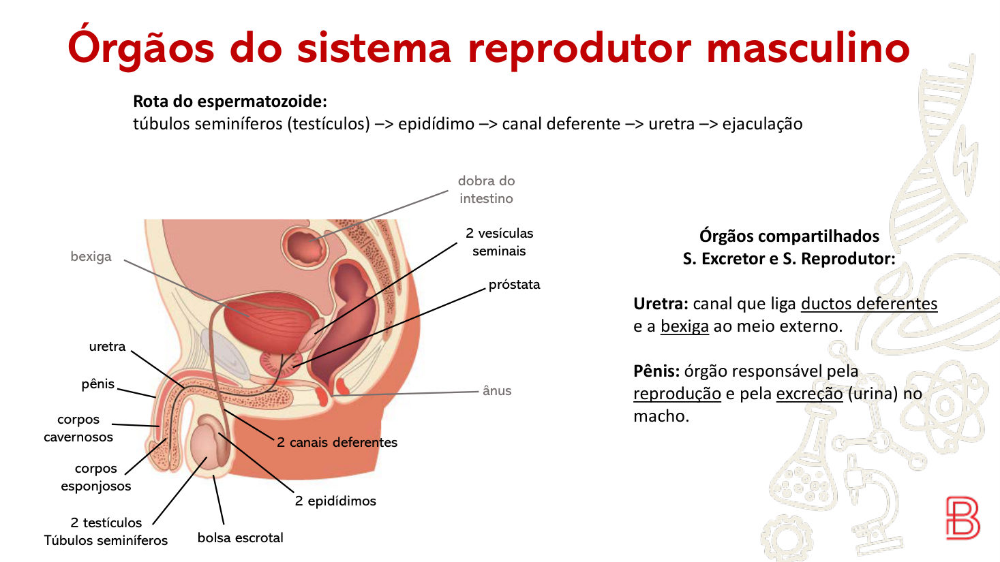
- O hipotálamo estimula a adeno-hipófise a liberar FSH e LH.
- FSH (hormônio folículo-estimulante): estimula a produção de espermatozoides nos túbulos seminíferos.
- LH (hormônio luteinizante): estimula a produção de testosterona no testículo.
- Testosterona: ajuda na espermatogênese e desenvolve as características sexuais secundárias masculinas (pelos, voz grave, massa muscular).
- Feedback negativo: testosterona alta inibe o hipotálamo e a hipófise, que diminuem FSH e LH.
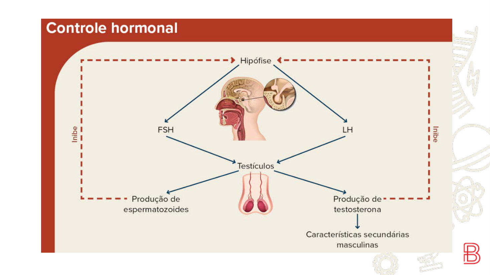
- Vasectomia: corte (ligadura) dos canais deferentes. Os espermatozoides continuam sendo produzidos, mas não sobem e são reabsorvidos. A ejaculação continua, só que com sêmen sem espermatozoides.
- Não altera a testosterona nem a espermatogênese: os testículos, o FSH e o LH não são afetados. Por isso não muda o desejo nem as características masculinas.
- Câncer de próstata: 2º tipo de câncer mais comum no Brasil. Diagnóstico por dosagem de PSA, toque retal e biópsia. Fatores de risco: idade acima de 55 anos, histórico familiar, obesidade e exposição a arsênio, aminas aromáticas e derivados de petróleo.
- Sem próstata (prostatectomia), falta o líquido alcalino que neutraliza o pH ácido da vagina: os espermatozoides sobrevivem menos. (Exercício Famerp: resposta B.)
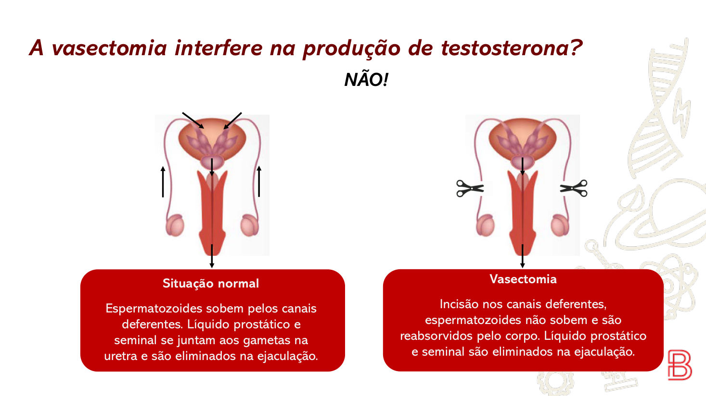
A espermatogênese em detalhe fica para a 3ª série.
Sistema reprodutor feminino e ciclo menstrual
Ovários e folículos, tuba, útero, vagina · FSH, LH, estrógeno e progesterona
| Estrutura | Função |
|---|---|
| Ovários | Contêm os folículos ovarianos: conjunto de células que envolve e nutre o ovócito. O folículo em crescimento produz estrógeno; depois da ovulação vira corpo lúteo e produz progesterona. |
| Tuba uterina (trompa) | Recebe o ovócito liberado na ovulação. É onde normalmente ocorre a fecundação; leva o embrião ao útero. |
| Útero | Abriga o embrião. Camadas: endométrio (interna, vascularizada; recebe o embrião na nidação e descama na menstruação) e miométrio (músculo liso; sensível à ocitocina, faz as contrações do parto). |
| Vagina | Liga o útero ao meio externo: canal da cópula, da menstruação e do parto. Tem pH ácido. |
| Uretra e clitóris | Na mulher a uretra (bexiga → exterior) é separada da vagina. O clitóris tem a mesma origem embrionária do pênis e cerca de 8 mil terminações nervosas. |
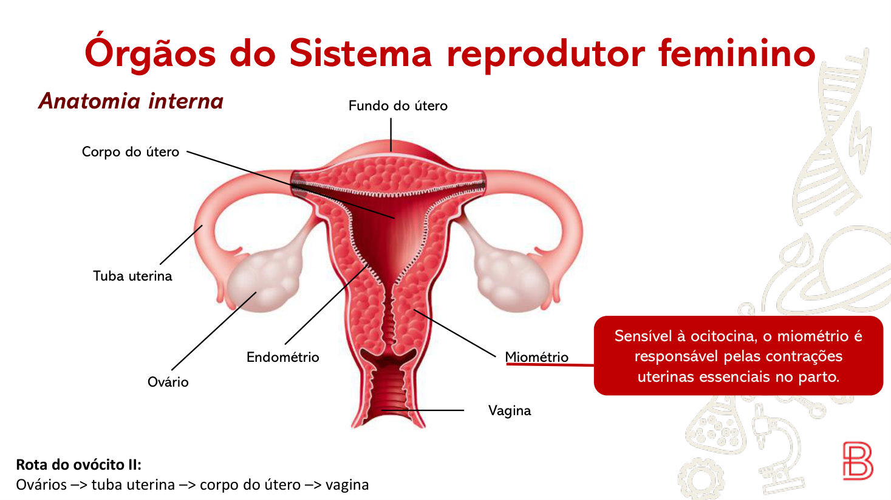
| Hormônio | Quem produz | O que faz |
|---|---|---|
| FSH | Adeno-hipófise | Faz o folículo crescer; o folículo passa a produzir estrógeno. |
| LH | Adeno-hipófise | O pico de LH (meio do ciclo) causa a ovulação. As células que sobram do folículo viram corpo lúteo, que produz progesterona. |
| Estrógeno | Folículo em desenvolvimento | Começa a espessar o endométrio e desenvolve os caracteres sexuais secundários femininos. Alto na primeira metade do ciclo. |
| Progesterona | Corpo lúteo | Mantém o endométrio desenvolvido: aumenta a vascularização e a secreção das glândulas. Alta na segunda metade do ciclo. |
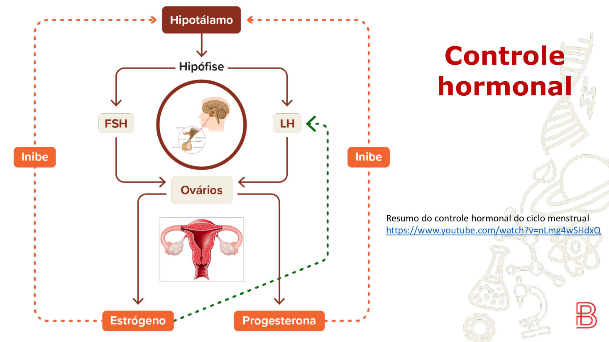
- Dias 1 a 5, menstruação: progesterona e estrógeno estão baixos, o endométrio descama. O dia 1 do ciclo é o primeiro dia de sangramento.
- Fase folicular: o FSH sobe e o folículo cresce produzindo estrógeno. O estrógeno reconstrói o endométrio.
- Por volta do 14º dia, ovulação: o estrógeno alto provoca um pico de LH (e de FSH), e o ovócito II é liberado na tuba.
- Fase lútea: o folículo vazio vira corpo lúteo, que produz progesterona (e algum estrógeno). O endométrio fica espesso e vascularizado, pronto para a nidação. Estrógeno e progesterona altos inibem FSH e LH (feedback negativo).
- Sem fecundação: sem LH, o corpo lúteo degenera, a progesterona cai, o endométrio descama e começa nova menstruação. Com a queda dos hormônios ovarianos, a hipófise volta a liberar FSH e o ciclo recomeça.
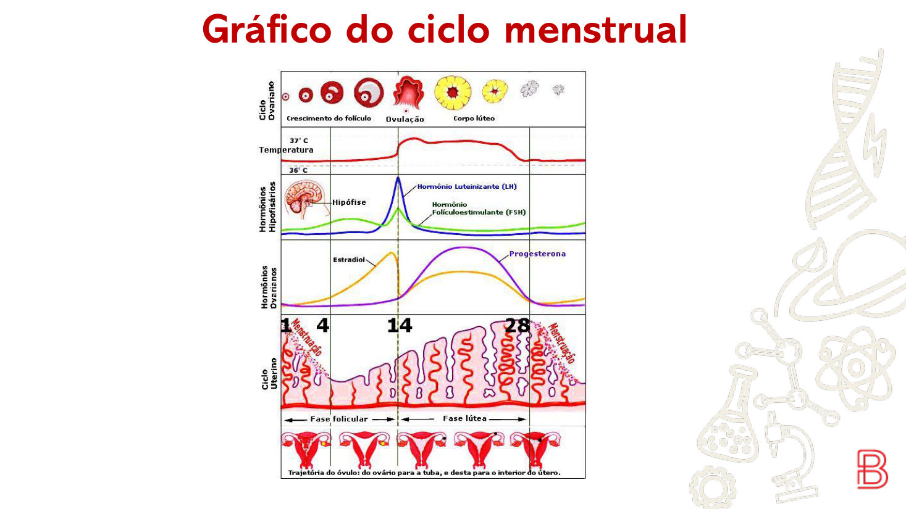
Os ovários esgotam os folículos, então param de produzir estrógeno e progesterona. Sem o feedback negativo desses hormônios, a hipófise passa a liberar FSH e LH em quantidade alta, mas sem efeito: não há folículos para responder.
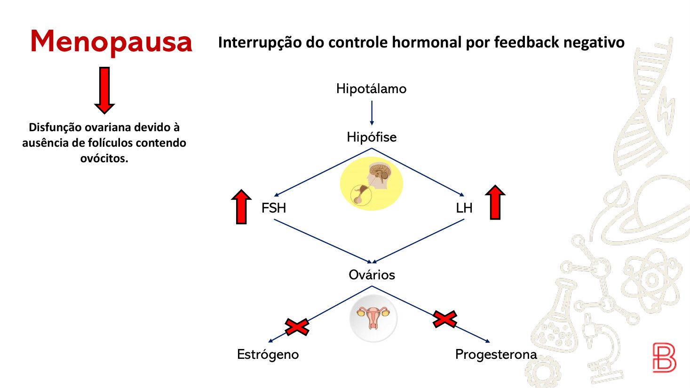
Fecundação, gravidez, gêmeos e contracepção
HCG, nidação, gráfico da gestação, tabelinha, pílula, vasectomia e laqueadura
- A fecundação ocorre na tuba, até cerca de 24 horas após a ovulação. O espermatozoide sobrevive cerca de 3 dias no corpo da mulher; o ovócito II, até 2 dias.
- O embrião chega ao útero 4 a 6 dias depois e precisa se implantar no endométrio: é a nidação. Ela depende da espessura e da qualidade do endométrio.
Depois da ovulação, FSH e LH estão muito baixos (inibidos pelo estrógeno e pela progesterona). Sem LH, o corpo lúteo morreria e o endométrio descamaria, levando o embrião junto. Quem resolve isso é o embrião:
- As células do trofoblasto (futura placenta) produzem HCG (gonadotrofina coriônica humana).
- O HCG mantém o corpo lúteo produzindo estrógeno e progesterona.
- A progesterona mantém o endométrio: a mulher não menstrua e a gravidez continua.
- Por volta do 3º mês, a placenta já desenvolvida passa a produzir estrógeno e progesterona sozinha, e o HCG cai.
- No parto, os hormônios placentários caem e entra a ocitocina (hipotálamo, liberada pela neuro-hipófise), que contrai o miométrio.
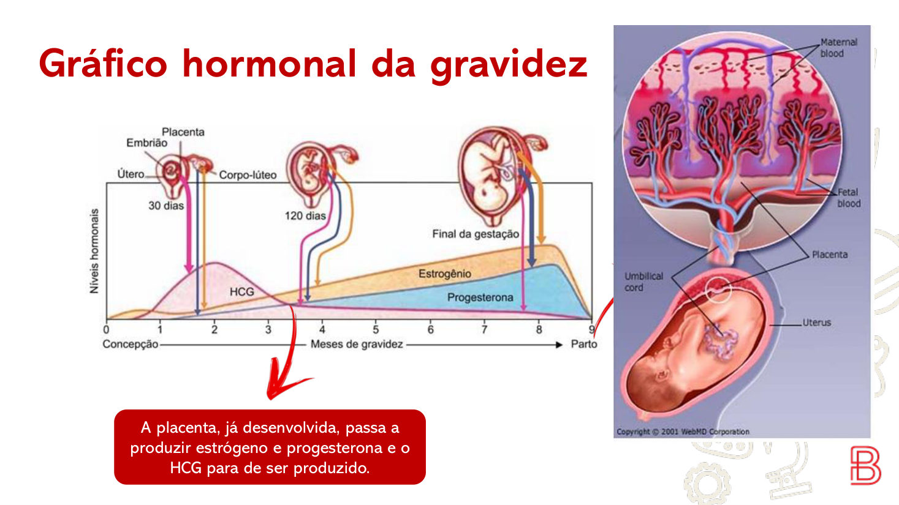
Monozigóticos (idênticos, univitelinos)
1 ovócito + 1 espermatozoide formam 1 zigoto, que se divide em duas massas de células. Mesmo material genético: mesmo sexo e muito parecidos.
Dizigóticos (fraternos, bivitelinos)
2 ovócitos liberados no mesmo ciclo, cada um fecundado por um espermatozoide diferente: 2 zigotos. São irmãos comuns que nasceram juntos; podem ter sexos diferentes.
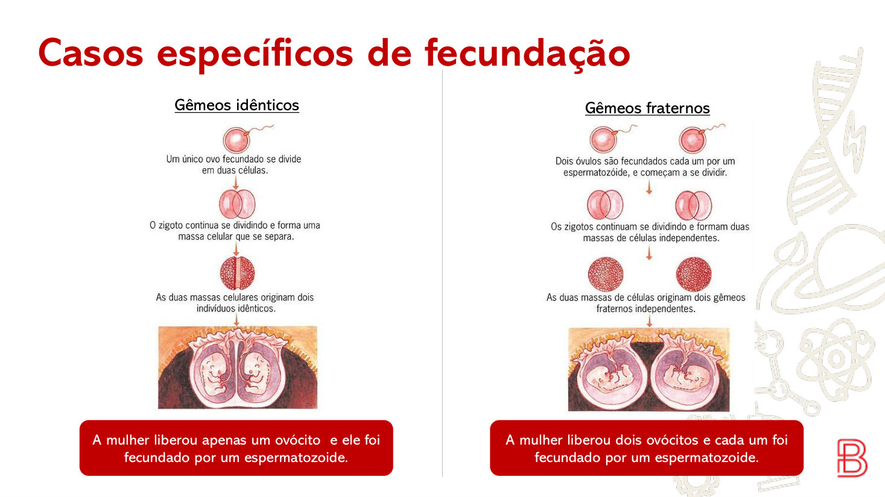
| Método | Como funciona |
|---|---|
| Pílula (hormonal) | Hormônios sintéticos parecidos com estrógeno e progesterona. Mantêm esses níveis altos e, por feedback negativo, inibem FSH e LH: o folículo não amadurece e não há pico de LH, logo não há ovulação. Na pausa (pílula de 21 dias), os hormônios caem e há sangramento. |
| Vasectomia | Corte dos canais deferentes: o sêmen sai sem espermatozoides. Não altera testosterona. |
| Laqueadura | Corte ou amarração das tubas uterinas: o ovócito não encontra o espermatozoide. A mulher continua ovulando e menstruando normalmente (os ovários não são tocados). |
| Tabelinha | Método comportamental: evitar relações no período fértil. A ovulação ocorre entre o 11º e o 15º dia (ciclo de 28 dias); conta-se cerca de 3 dias antes e 3 depois. É indicada para concepção, não para contracepção: falha muito porque os ciclos variam. |
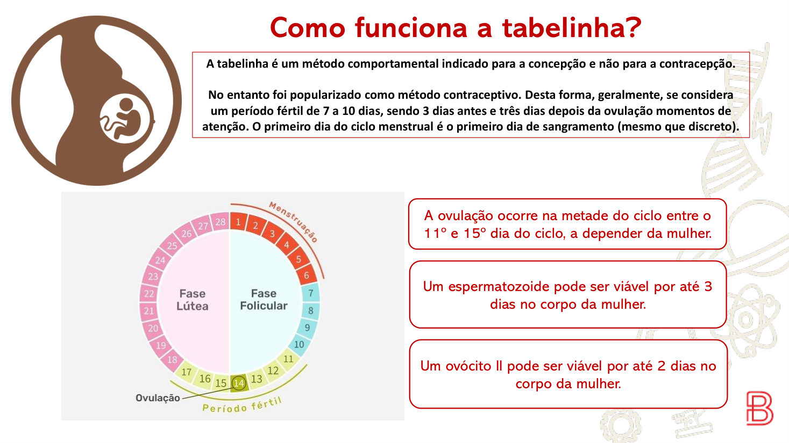
Dá para engravidar menstruada?
Sim. Num ciclo curto a ovulação pode ocorrer no 10º dia, e o espermatozoide sobrevive cerca de 3 dias.
Dá para ovular sem menstruar depois?
Só se a ovulação resultar em fecundação e a gravidez der certo (HCG mantém o endométrio).
Organização do sistema nervoso
SNC (encéfalo e medula) · SNP (nervos, gânglios, receptores) · tipos de nervos
É a rede de comunicação do corpo: capta estímulos do ambiente, interpreta, guarda e elabora respostas (movimentos, sensações, ajustes nos órgãos). Integra os outros sistemas (endócrino, circulatório, respiratório, digestório) e mantém a homeostase.
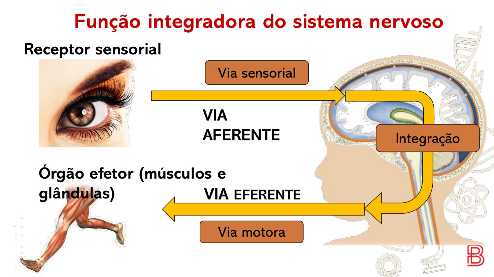
| Parte | Funções |
|---|---|
| Cérebro | Atos voluntários, consciência, memória, raciocínio, linguagem e interpretação dos sentidos (visão, audição, olfato, gustação, tato). Os dois hemisférios são ligados pelo corpo caloso. |
| Hipotálamo | Controla temperatura, fome, sede (balanço hídrico), emoções e os órgãos viscerais; produz ADH e ocitocina e comanda a hipófise. Liga o nervoso ao endócrino. |
| Cerebelo | Equilíbrio, coordenação motora e tônus muscular. Lesão: ataxia (perda de coordenação). |
| Tronco encefálico: ponte | Liga o cérebro ao cerebelo e à medula; participa do controle da respiração. |
| Tronco encefálico: bulbo | Funções vitais automáticas: respiração, batimentos cardíacos, pressão, deglutição. Lesão no bulbo pode matar. |
| Medula espinal | Conduz impulsos entre o corpo e o encéfalo e elabora os atos reflexos. Lesão na região lombar causa paraplegia (pernas); lesão no pescoço (cervical), tetraplegia. |
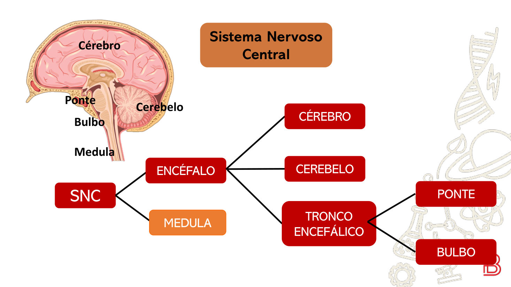
- Nervos: feixes de fibras nervosas (axônios) fora do encéfalo e da medula. Cranianos (saem do encéfalo, 12 pares) e espinais (saem da medula, 31 pares).
- Gânglios: conjuntos de corpos celulares de neurônios localizados fora do SNC.
- Receptores sensoriais: terminações de neurônios nos órgãos dos sentidos que transformam estímulos (luz, som, calor, toque, substâncias químicas) em impulsos elétricos.
Sensitivos (aferentes)
Levam informação dos receptores para o SNC.
Motores (eferentes)
Levam ordens do SNC para músculos e glândulas.
Mistos
Têm fibras sensitivas e motoras. Ex.: nervo trigêmeo, nervos espinais.
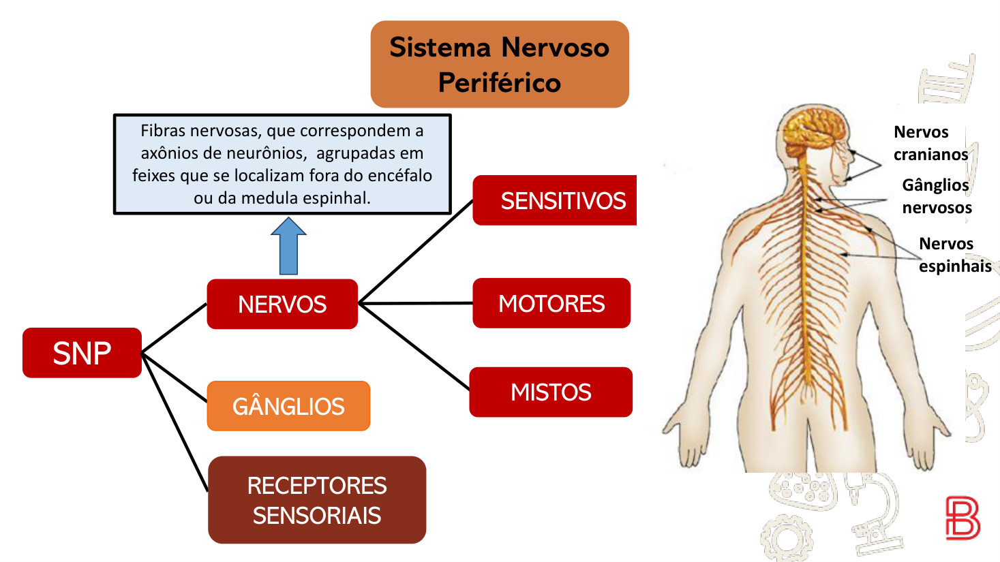
Neurônio e impulso nervoso
Partes do neurônio · repouso e potencial de ação · bomba de Na⁺/K⁺ · mielina
O tecido nervoso tem neurônios e células da glia (que são a maioria: é mito que 90% do tecido seja de neurônios). A glia sustenta, nutre, protege e forma a bainha de mielina.
| Parte | Função |
|---|---|
| Dendritos | Recebem os estímulos (do meio ou de outro neurônio). |
| Corpo celular | Tem o núcleo; recebe a informação dos dendritos e passa ao axônio. |
| Axônio | Conduz o impulso para longe do corpo celular. Pode ter bainha de mielina (isolante, com falhas chamadas nódulos de Ranvier). |
| Terminações do axônio | Transmitem o sinal a outro neurônio ou à célula efetora, liberando neurotransmissores. |
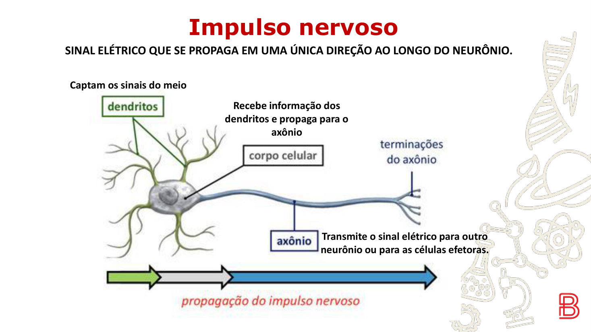
| Estado | Cargas | O que acontece | Transporte |
|---|---|---|---|
| Polarizado (potencial de repouso, cerca de −70 mV) | Fora +, dentro − | Muito Na⁺ fora e muito K⁺ dentro. Estado necessário para o neurônio poder responder a um estímulo. | Ativo: bomba de sódio e potássio (gasta ATP) |
| Despolarizado (potencial de ação, até cerca de +40 mV) | Fora −, dentro + | O estímulo (acima do limiar) abre canais de sódio e o Na⁺ entra rápido: a polaridade se inverte. | Passivo: difusão facilitada de Na⁺ por canais |
| Repolarizado | Volta a fora +, dentro − | Os canais de Na⁺ fecham, o K⁺ sai e a bomba restaura as concentrações. Há um período refratário em que o trecho não responde. | Passivo (saída de K⁺) e depois ativo (bomba) |
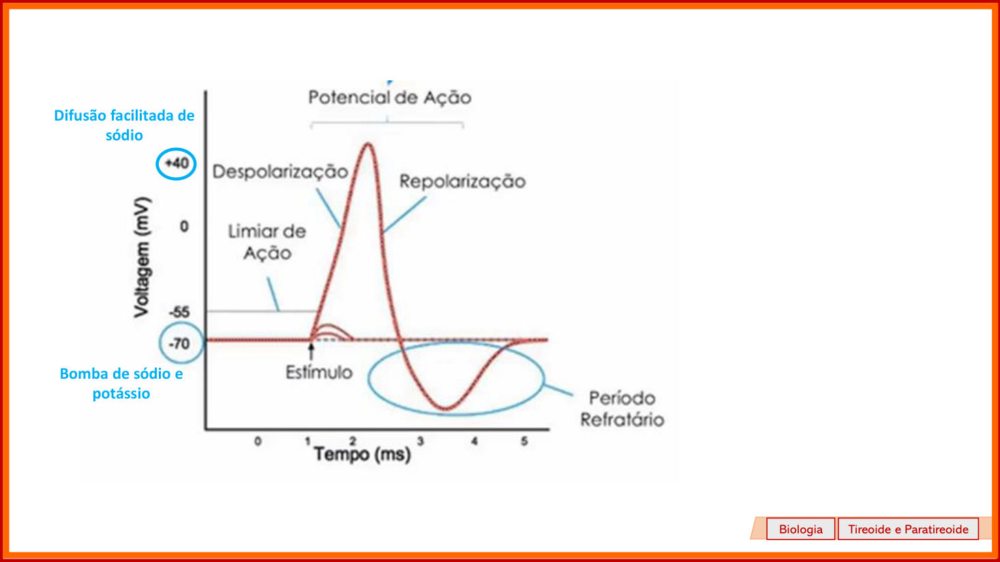
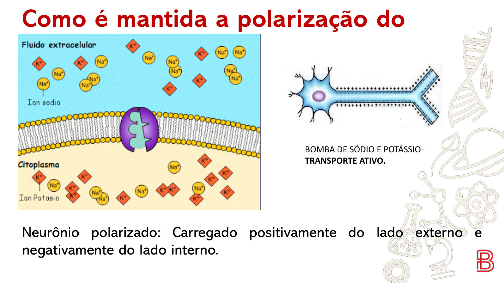
Impulso nervoso = propagação do potencial de ação ao longo do neurônio, como uma onda de despolarização seguida de repolarização (efeito dominó: cada trecho despolarizado despolariza o vizinho).
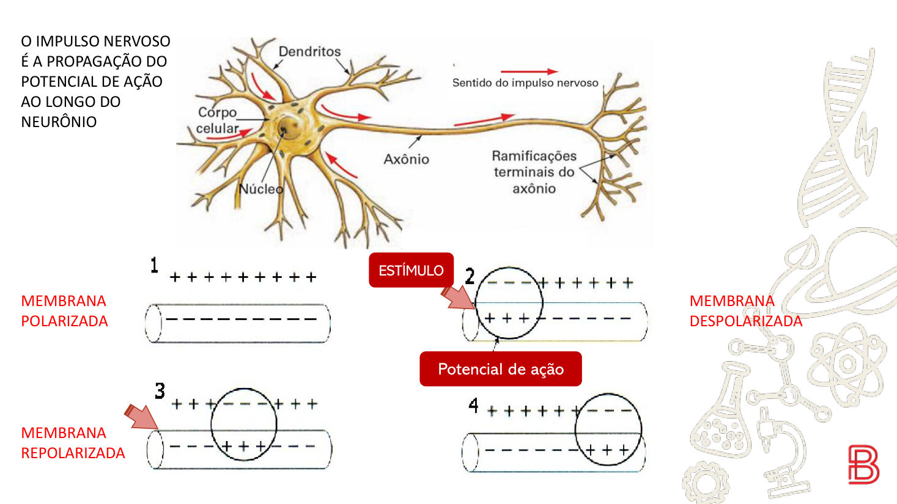
Mielinizado: condução saltatória
A mielina isola o axônio; a despolarização só acontece nos nódulos de Ranvier e o impulso "salta" de nódulo em nódulo. Muito mais rápida e gasta menos energia.
Não mielinizado: condução contínua
A despolarização percorre toda a membrana do axônio, trecho a trecho. Mais lenta.
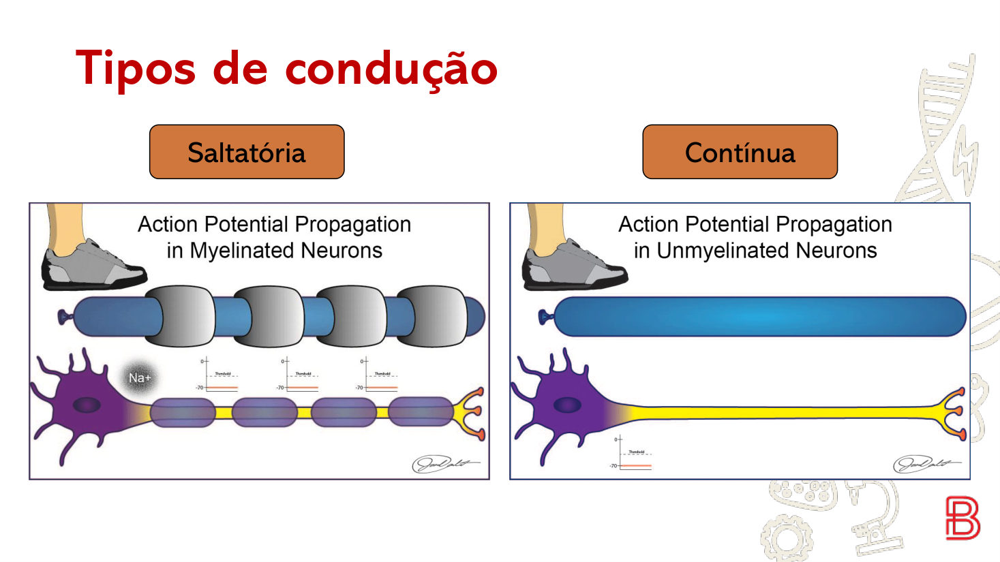
Sinapses e neurotransmissores
Pré-sináptico, fenda, pós-sináptico · tipos de sinapse · excitatório e inibitório
Sinapse é a região de contato entre um neurônio e outra célula. Funciona como uma válvula: o impulso só passa num sentido, do axônio de um para os receptores do outro.
- O impulso chega à terminação do axônio do neurônio pré-sináptico.
- Vesículas cheias de neurotransmissor se fundem à membrana e o liberam na fenda sináptica (espaço entre as células; elas não se encostam).
- O neurotransmissor se difunde pela fenda e se liga a receptores da membrana da célula pós-sináptica.
- Os receptores abrem canais de íons e geram (ou dificultam) um novo potencial de ação.
- Para a resposta acabar, o neurotransmissor é degradado por enzimas na fenda ou recaptado pelo neurônio pré-sináptico.
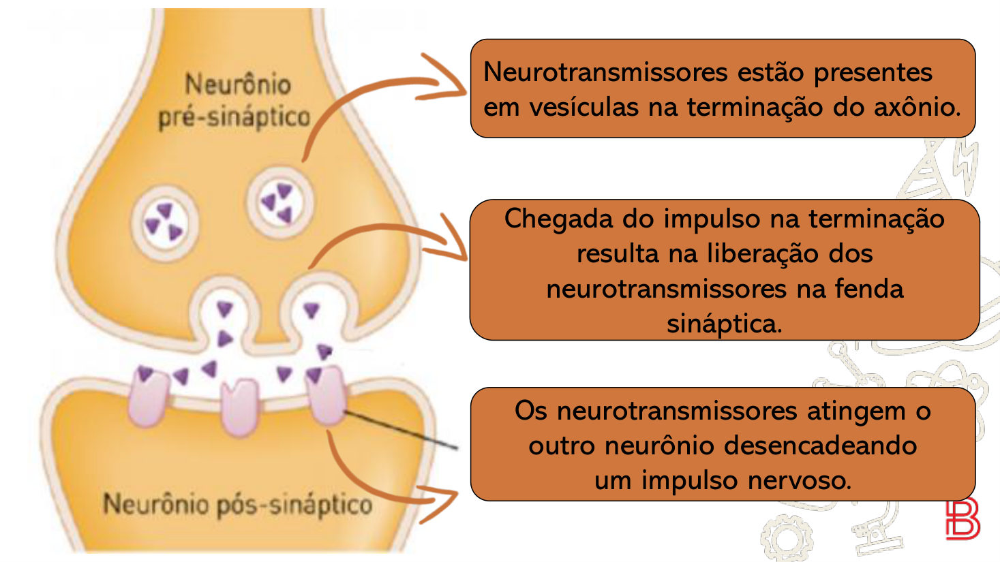
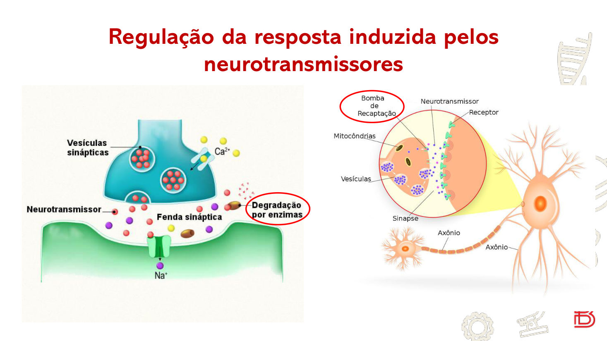
Entre neurônios
Axônio de um neurônio com dendrito (ou corpo celular) de outro.
Neuromuscular (placa motora)
Neurônio motor com músculo. Neurotransmissor: acetilcolina, que contrai o músculo esquelético.
Neuroglandular
Neurônio com glândula, estimulando a secreção.
Mediadores químicos produzidos pelos neurônios. O efeito depende do receptor em que se ligam:
- Excitatórios: provocam potencial de ação no neurônio seguinte ou ativam o órgão efetor.
- Inibitórios: impedem ou dificultam o potencial de ação, ou diminuem a atividade do efetor.
- O mesmo neurotransmissor pode ser os dois: a acetilcolina excita o músculo esquelético e inibe o músculo cardíaco.
| Neurotransmissor | Onde / efeito principal |
|---|---|
| Acetilcolina | Placa motora (contração do músculo esquelético); sistema parassimpático (reduz batimentos). |
| Noradrenalina | Sistema simpático: alerta, luta e fuga (acelera coração, dilata pupila). |
| Dopamina | Prazer, recompensa, motivação e controle dos movimentos. |
| Serotonina | Humor, sono e apetite (baixa associada à depressão). |
| Endorfina | Analgésico natural, sensação de bem-estar (exercício físico). |
Ato reflexo e arco reflexo
Resposta rápida elaborada pela medula, sem passar pelo cérebro
- Ato reflexo: resposta rápida e involuntária, elaborada pela medula espinal, sem processamento cerebral. Protege o corpo (tirar a mão do fogo, do cacto, do fio desencapado) e mantém o tônus (reflexo patelar).
- Arco reflexo: o caminho que o impulso faz para produzir o ato reflexo.
- A informação também sobe ao cérebro, por isso sentimos a dor, mas só depois de a mão já ter se afastado.
Arco reflexo simples
Receptor → neurônio sensitivo (aferente) → medula → neurônio motor (eferente) → efetor. Ex.: reflexo patelar (martelinho no joelho).
Arco reflexo composto
Tem um neurônio associativo (interneurônio) na medula entre o sensitivo e o motor. Ex.: tirar a mão do espinho.
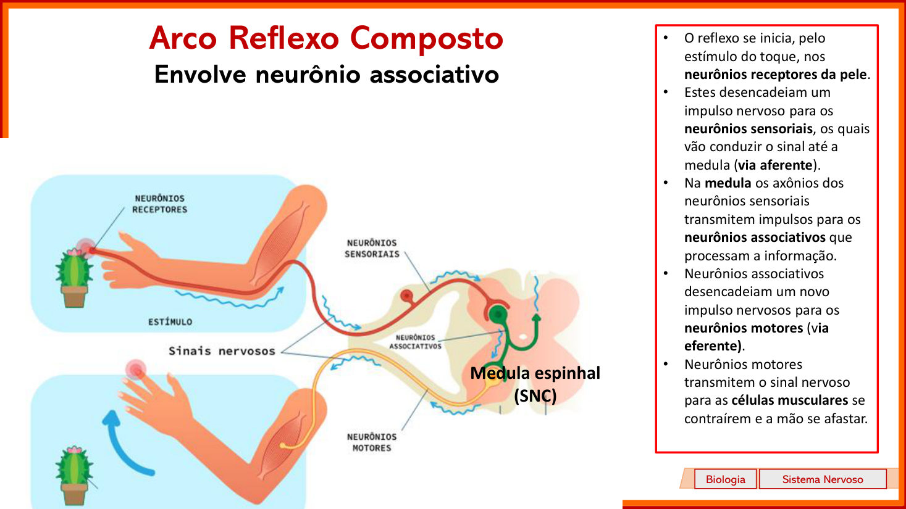
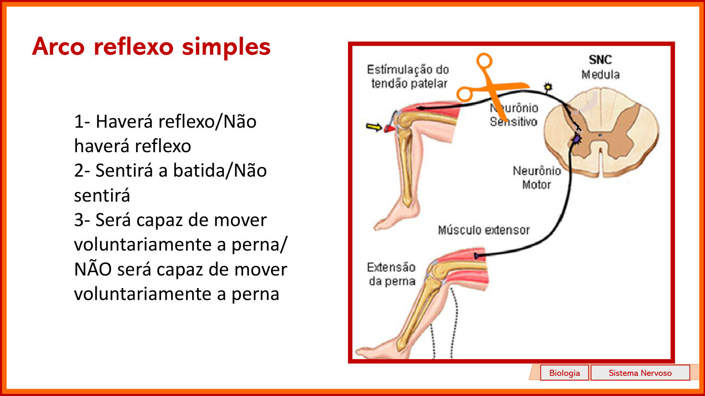
| Corte | Reflexo? | Sente? | Move a perna voluntariamente? |
|---|---|---|---|
| Raiz dorsal / neurônio sensitivo | Não | Não | Sim (a via motora está intacta) |
| Raiz ventral / neurônio motor | Não | Sim (a via sensitiva chega ao cérebro) | Não |
Truque: a raiz dorsal (de trás) é sensitiva e tem um gânglio; a raiz ventral (da frente) é motora.
SNP somático e autônomo
Voluntário × involuntário · simpático × parassimpático
Somático (voluntário)
Leva ordens do SNC aos músculos esqueléticos: andar, escrever, falar. Neurotransmissor na placa motora: acetilcolina.
Autônomo (involuntário)
Inerva as vísceras (coração, vasos, digestório, bexiga, glândulas) e regula o meio interno, mantendo a homeostase. Ex.: a pupila dilata quando vemos alguém interessante.
A maioria dos órgãos recebe os dois ramos, com ações antagônicas: como uma gangorra, um acelera e o outro freia, buscando o equilíbrio.
| Simpático | Parassimpático | |
|---|---|---|
| Situação | Estresse, luta e fuga, exercício intenso | Repouso e digestão, calma, saciedade |
| Neurotransmissor | Noradrenalina | Acetilcolina |
| Coração | Acelera (taquicardia) | Desacelera |
| Pupilas | Dilata | Contrai |
| Brônquios | Dilata (entra mais ar) | Contrai |
| Digestão (peristaltismo e secreções) | Inibe | Estimula |
| Salivação | Inibe (boca seca) | Estimula |
| Fígado | Libera glicose no sangue | Armazena (glicogênio) |
| Adrenais | Estimula liberação de adrenalina | (sem ação) |
| Bexiga | Relaxa (segura a urina) | Contrai (esvazia) |
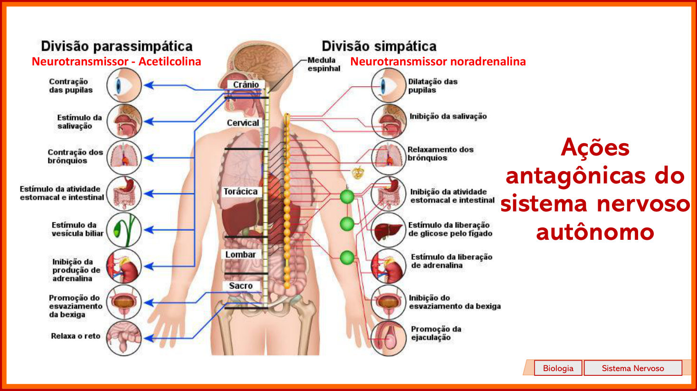
Semana Inter e revisão dos trimestres anteriores
Endócrino · Digestório · Circulatório · Respiratório · Excretor
Tema: "Restauração de ecossistemas: gestão de recursos hídricos, conservação do solo e preservação da biodiversidade". Na prova de Biologia o foco são as consequências das ações humanas nos ecossistemas aquáticos e os impactos no organismo humano.
Hormônios são substâncias produzidas por glândulas endócrinas (que secretam no sangue; as exócrinas secretam por ductos, como as salivares) e agem nas células-alvo, as que têm receptores para eles.
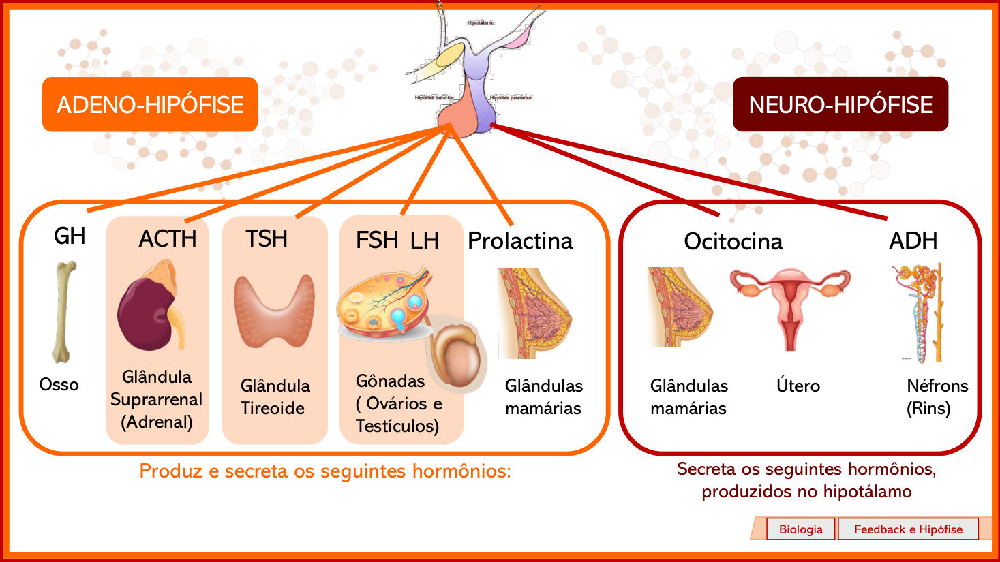
| Glândula | Hormônio | Ação | Observação |
|---|---|---|---|
| Adeno-hipófise (produz e secreta) | GH (crescimento) | Cresce ossos (cartilagem da epífise) e aumenta síntese de proteínas; usa gordura como fonte de energia. | Falta na infância: nanismo (proporcional). Excesso na infância: gigantismo. Excesso no adulto: acromegalia (extremidades crescem). |
| TSH (tireotrófico) | Estimula a tireoide a produzir T3 e T4. | Feedback negativo: T3/T4 altos inibem o TSH. | |
| ACTH (adrenocorticotrófico) | Estimula o córtex das adrenais. | ||
| FSH | Folículo (mulher) e espermatozoides (homem). | Gonadotrofinas: alvo são as gônadas. | |
| LH | Ovulação e corpo lúteo (mulher); testosterona (homem). | ||
| Prolactina | Produção de leite. | ||
| Neuro-hipófise (só armazena e secreta; quem produz é o hipotálamo) | Ocitocina | Contração do útero no parto e ejeção do leite na amamentação. | Exemplo de feedback positivo (contrações cada vez mais fortes). |
| ADH (antidiurético, vasopressina) | Aumenta as aquaporinas e a reabsorção de água no ducto coletor: urina concentrada. | Álcool inibe o ADH (desidrata). Falta ou receptor que não responde: diabetes insipidus (poliúria e polidipsia). | |
| Tireoide | T3 e T4 | Aumentam o metabolismo basal: respiração celular, frequência cardíaca, desenvolvimento cerebral na infância. | Precisam de iodo (sal iodado, contra o bócio). Hiper: agitação, perda de peso, calor, exoftalmia. Hipo: sono, ganho de peso, frio, bócio, cretinismo na infância, Hashimoto. |
| Calcitonina | Baixa o cálcio no sangue (guarda nos ossos). | Antagônicos. Cálcio: rigidez óssea, contração muscular, coagulação. | |
| Paratireoides | Paratormônio | Aumenta o cálcio no sangue (tira dos ossos). Liberado quando o cálcio cai. | |
| Pâncreas (glândula mista; parte endócrina = ilhotas de Langerhans) | Insulina (células β) | Baixa a glicemia: faz a glicose entrar nas células e ser guardada como glicogênio (fígado e músculos). | Diabetes mellitus tipo 1: não produz insulina (autoimune, jovens, tratamento com insulina). Tipo 2: receptores não respondem (adultos, obesidade). |
| Glucagon (células α) | Sobe a glicemia: quebra glicogênio (glicogenólise) no jejum e no sono. | No jejum prolongado age o glucagon. | |
| Adrenais (suprarrenais) | Adrenalina (medula) | Luta e fuga, junto com o simpático: acelera coração, sobe glicemia. | |
| Aldosterona (córtex) | Aumenta a reabsorção de sódio nos túbulos renais (a água vai junto): sobe a pressão arterial. | Ativada pela renina quando a pressão cai. Falta: perda de sal e "fome de sal". | |
| Glicocorticoides (cortisol) e andrógenos (córtex) | Estresse, glicemia, anti-inflamatório. |
Feedback negativo
A resposta é contrária ao estímulo e devolve o valor ao normal. Ex.: T3/T4 altos inibem o TSH; glicemia alta libera insulina, que a baixa. É o que mantém a homeostase.
Feedback positivo
A resposta reforça o estímulo e aumenta a instabilidade. Ex.: contrações do parto liberam ocitocina, que gera contrações mais fortes.
| Local | pH | Enzima (origem) | Substrato → produto |
|---|---|---|---|
| Boca | ~7 (neutro) | Amilase salivar (ptialina) | Amido → maltose |
| Estômago | ~2 (ácido, HCl) | Pepsina (a partir do pepsinogênio) | Proteínas → peptídeos |
| Duodeno (intestino delgado) | ~8 (básico, bicarbonato do pâncreas) | Amilase pancreática | Amido → maltose |
| Tripsina e quimotripsina (pâncreas) | Proteínas e peptídeos → peptídeos menores | ||
| Lipase pancreática (bile só emulsifica, não é enzima) | Lipídios → ácidos graxos e glicerol | ||
| Enzimas intestinais: maltase, sacarase, lactase, peptidases | Dissacarídeos → monossacarídeos (glicose etc.); peptídeos → aminoácidos |
Tabela de revisão montada a partir do roteiro da orientação; confira com a lista da Maratona de Biologia.
- Circulatório: cavidades do coração, veias e artérias ligadas a cada uma, sístole e diástole, circulação pulmonar e sistêmica. Ver Bio 2º tri · Circulatório.
- Respiratório: ler a curva de saturação da hemoglobina (mais O₂ ligado onde a pressão de O₂ é alta, nos pulmões; libera nos tecidos; acidez, CO₂ e temperatura deslocam a curva para a direita e facilitam a liberação). Ver Bio 2º tri · Respiratório.
- Excretor: partes do néfron e o que acontece em cada uma (filtração no glomérulo, reabsorção nos túbulos, ação do ADH no ducto coletor e da aldosterona nos túbulos). Ver Bio 2º tri · Excretor.
Questões escritas
Perguntas dos estudos dirigidos e exercícios dos slides, respondidas. Tente antes de abrir.
A vasectomia interfere na espermatogênese? E na taxa de testosterona? Como ela evita a gravidez?
Não interfere em nenhuma das duas: os testículos, o FSH e o LH continuam iguais, então os espermatozoides e a testosterona continuam sendo produzidos. Ela corta os canais deferentes: os espermatozoides não chegam à uretra e são reabsorvidos, e o sêmen sai só com os líquidos da próstata e das vesículas seminais.
Num gráfico com dois hormônios ovarianos (A sobe na primeira metade, B na segunda), quem é quem e o que estimula cada um?
A é o estrógeno, produzido pelo folículo em crescimento sob estímulo do FSH. B é a progesterona, produzida pelo corpo lúteo, formado depois da ovulação sob estímulo do LH.
Qual a função do endométrio? E do miométrio?
O endométrio é a camada interna, vascularizada, que recebe e nutre o embrião (nidação) e descama na menstruação. O miométrio é a camada de músculo liso que, sob ação da ocitocina, contrai no parto.
Numa mulher que toma pílula de 21 dias, como ficam FSH e LH?
Baixos e sem pico durante todo o ciclo. Os hormônios sintéticos mantêm estrógeno e progesterona altos, que por feedback negativo inibem a hipófise: o folículo não amadurece e não há ovulação.
O que é nidação? Que hormônio surge a partir dela e por que a menstruação não acontece?
Nidação é a implantação do embrião no endométrio. A partir dela o trofoblasto (futura placenta) produz HCG, que mantém o corpo lúteo produzindo progesterona e estrógeno. Com a progesterona alta o endométrio não descama, então não há menstruação.
No gráfico da gestação, quem são os hormônios 1, 2 e 3 (o 3 sobe e cai no início)? Por que 1 e 2 caem depois do parto?
3 é o HCG; 1 e 2 são estrógeno e progesterona. O HCG mantém o corpo lúteo produzindo estrógeno e progesterona até a placenta assumir essa produção. Depois do parto a placenta é eliminada, por isso eles caem. Uma queda brusca e precoce durante a gravidez faz o endométrio descamar e pode causar aborto espontâneo.
Diferencie gêmeos monozigóticos de dizigóticos.
Monozigóticos: um ovócito fecundado por um espermatozoide forma um zigoto que se divide em dois embriões, geneticamente iguais e do mesmo sexo. Dizigóticos: dois ovócitos liberados no mesmo ciclo, cada um fecundado por um espermatozoide, formam dois zigotos diferentes, que podem ser de sexos diferentes.
Classifique como SNC ou SNP: cerebelo, bulbo, medula espinal, gânglios, hipotálamo, nervos, cérebro.
SNC: cerebelo, bulbo, medula espinal, hipotálamo e cérebro. SNP: gânglios nervosos e nervos.
Cite três funções das células da glia.
Sustentar e proteger os neurônios, nutri-los (os astrócitos ligam os neurônios aos vasos sanguíneos), formar a bainha de mielina (oligodendrócitos no SNC) e defender o tecido (a micróglia fagocita).
O que significa "o impulso nervoso é a propagação de um potencial de ação"? Qual o estado inicial necessário?
O estímulo inverte a polaridade de um trecho da membrana (despolarização: o Na⁺ entra), e essa inversão vai passando de trecho em trecho pelo neurônio, seguida da repolarização. Para responder, o neurônio precisa estar polarizado, em potencial de repouso (fora positivo, dentro negativo), mantido pela bomba de sódio e potássio.
No gráfico do potencial de membrana, identifique repouso, despolarização, repolarização e hiperpolarização/período refratário.
Linha reta em cerca de −70 mV: repouso. Subida rápida até cerca de +40 mV: despolarização (entrada de Na⁺). Descida: repolarização (saída de K⁺). Trecho que passa abaixo de −70 mV antes de voltar: hiperpolarização, parte do período refratário, depois a bomba restaura o repouso.
Por que a sinapse química é unidirecional? O que é sinapse motora e qual o seu neurotransmissor?
Só a terminação pré-sináptica tem vesículas com neurotransmissor e só a membrana pós-sináptica tem os receptores. A sinapse motora (placa motora) é entre o neurônio motor e a fibra do músculo esquelético; o neurotransmissor é a acetilcolina.
Neurotransmissores e hormônios são sinônimos?
Não. Neurotransmissores são liberados pelos neurônios na fenda sináptica e agem na célula vizinha, de forma rápida e localizada. Hormônios são liberados por glândulas no sangue e agem em células-alvo distantes, de forma mais lenta e duradoura. (A noradrenalina e a adrenalina aparecem nos dois papéis.)
Por que um susto provoca taquicardia?
O susto ativa o sistema nervoso autônomo simpático, que libera noradrenalina no coração (e faz as adrenais liberarem adrenalina), aumentando a frequência cardíaca para a reação de luta ou fuga.
Qual o papel do parassimpático no coração, na pupila e no peristaltismo?
Mantém o corpo em repouso e digestão, usando acetilcolina: diminui a frequência cardíaca, contrai a pupila e aumenta o peristaltismo e as secreções digestivas.
No arco reflexo da vela: o que acontece se cortar a raiz dorsal (A)? E a ventral (B)?
Raiz dorsal (sensitiva): o impulso não chega à medula, então não há reflexo nem sensação de calor, mas a pessoa ainda move o braço voluntariamente. Raiz ventral (motora): a pessoa sente o calor, porque a informação sobe ao cérebro, mas não há reflexo nem movimento voluntário do braço.
Quiz de Fixação
25 testes com alternativas, na linha dos exercícios dos slides